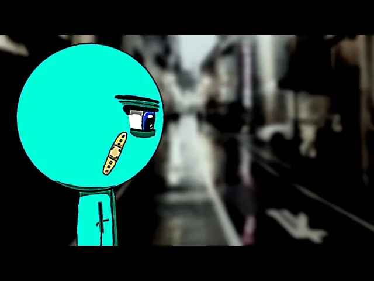

O objetivo desse site vai ser testar todo o conhecimento que eu obtive até agora com o curso
As animações mais conhecidas brasileiras feitas no Stick Fighter

O SF é um aplicativo de animação bem simples para celular, lançado em 20092011, com o único objetivo de se divertir.
mas com o passar do tempo, os animadores foram se superando, criando algo muito além do esperado, superando qualquer limitações de aplicativo
assista gratuitamente

Por algum motivo, os animadores coreanos estão muito mais avançados nas animações, fazendo ângulos que até então era considerado impossíveis de fazer, com animações super frenéticas e ângulos criativos, os animadores coreanos ficaram conhecidos como os melhores animadores de SF
Sabendo que o criador do Stick Fighter abandonou o aplicativo, uma pessoa da comunidade decidiu dar continuidade ao app, o nome dele é ykarus, ele adicionou novas funções de velocidade da animação e a função de mandar suas custum para outras pessoas, sem dúvidas um feito incrível, um grande avanço para a comunidade de animação.
De acordo com o Ykarus : Pretendo criar um novo stick fighter com base no aplicativo original, não dá mais pra ficar modificando ele, é como se eu tivesse criando um frankstain, costurando uma coisa aqui e ali, e a chance de uma nova função deixar o aplicativo quebrado é grande